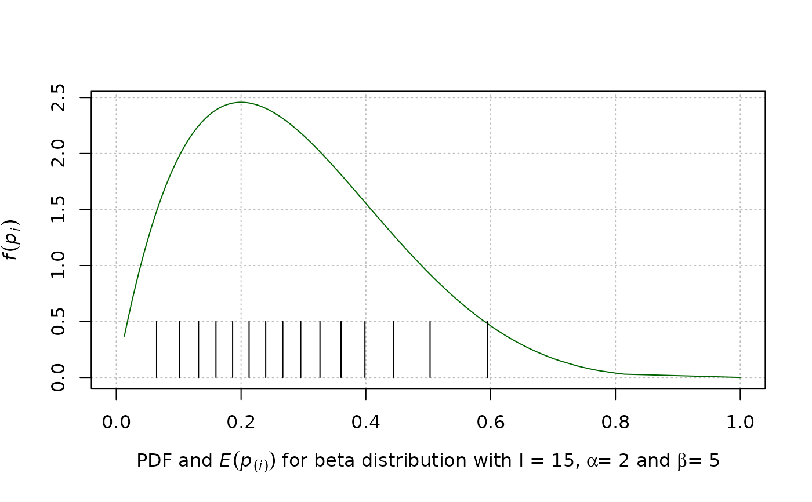

beta.dist.RdGet the expected value of order statistics, E(p(i)), from a beta distribution by specifying an average probability and shape parameters for the beta distribution.
beta.dist(p = 0.05, alpha = 1, beta = NULL, grp.sz = 10,
simul = FALSE, plot = FALSE, rel.tol = ifelse(a >= 1,
.Machine$double.eps^0.25, .Machine$double.eps^0.1))average probability, \(\frac{\alpha}{\alpha + \beta}\).
the alpha parameter for the beta distribution. The details of the specification of alpha are given under 'Details'.
the beta parameter for the beta distribution, which is calculated from the average probability, p, if it is not specified. The details of the specification of beta are given under 'Details'.
the number of individuals in the group.
a logical value indicating whether to use simulation. If simulation is used, the vector of probabilities is found by simulating 10,000 values from a beta distribution with the specified shape parameters. If simulation is not used, the vector of individual probabilities is found using integration.
a logical value indicating whether to plot the distribution with p(i) marked.
relative tolerance used for integration.
A vector of ordered probabilities, p_i.
If alpha = 0, this function uses an extreme value distribution based on a Bernoulli(p) distribution to find the individual probabilities, p_i. If alpha is infinite, this function uses \(p_i=p\) for all i.
If beta is not specified, it is calculated from the average probability p as \(b=a*\frac{1}{p-1}\). If beta is specified, this function ignores p unless alpha is infinite.
Depending on the specified probability, alpha level, and overall group size, simulation may be necessary in order to generate the vector of individual probabilities. In this case, the user should specify simul=TRUE and set a seed in order to reproduce results. See Black et al. (2015) for additional details.
Black, M., Bilder, C., Tebbs, J. (2015). “Optimal retesting configurations for hierarchical group testing.” Journal of the Royal Statistical Society. Series C: Applied Statistics, 64(4), 693--710. ISSN 14679876, doi:10.1111/rssc.12097 .
http://chrisbilder.com/grouptesting
p.vec.func for generating a vector of individual
risk probabilities for informative group testing (after checking
whether simulation is needed) and Informative.array.prob
for arranging a vector of individual risk probabilities in a matrix
for informative array testing without master pooling.
Other Individual risk probability functions: Informative.array.prob,
p.vec.func
# This example takes less than 1 second to run.
# Estimated running time was calculated using a
# computer with 16 GB of RAM and one core of an
# Intel i7-6500U processor.
set.seed(8791)
beta.dist(p=0.05, alpha=1, grp.sz=30)
#> [1] 0.001751313 0.003559735 0.005429229 0.007364192 0.009369516 0.011450673
#> [7] 0.013613801 0.015865824 0.018214593 0.020669056 0.023239479 0.025937712
#> [13] 0.028777544 0.031775144 0.034949652 0.038323954 0.041925737 0.045788939
#> [19] 0.049955800 0.054479820 0.059430187 0.064898616 0.071010390 0.077943148
#> [25] 0.085961034 0.095482273 0.107229257 0.122621856 0.145118731 0.187862795
# This example takes less than 1 second to run.
# Estimated running time was calculated using a
# computer with 16 GB of RAM and one core of an
# Intel i7-6500U processor.
set.seed(1002)
beta.dist(p=0.02, alpha=2, grp.sz=50, simul=TRUE)
#> [1] "Using simulation"
#> [1] 0.001939895 0.002996917 0.003837738 0.004570686 0.005240784 0.005871886
#> [7] 0.006485620 0.007064949 0.007635337 0.008203476 0.008754994 0.009298752
#> [13] 0.009841646 0.010380426 0.010916912 0.011469269 0.012015175 0.012566767
#> [19] 0.013123206 0.013685895 0.014265030 0.014848942 0.015450179 0.016058734
#> [25] 0.016680442 0.017311824 0.017959097 0.018624146 0.019304512 0.020023349
#> [31] 0.020772141 0.021538727 0.022340146 0.023180833 0.024055904 0.024992935
#> [37] 0.025976421 0.027018874 0.028173411 0.029398883 0.030709566 0.032154551
#> [43] 0.033739944 0.035537624 0.037596394 0.040030548 0.043007610 0.046905875
#> [49] 0.052665440 0.063848289
# This example takes less than 1 second to run.
# Estimated running time was calculated using a
# computer with 16 GB of RAM and one core of an
# Intel i7-6500U processor.
set.seed(5732)
beta.dist(alpha=2, beta=5, grp.sz=15, plot=TRUE)

#> [1] 0.06460758 0.10136299 0.13185646 0.15974117 0.18646583 0.21284923
#> [7] 0.23948415 0.26689836 0.29565251 0.32643639 0.36021202 0.39849288
#> [13] 0.44401840 0.50286151 0.59477480